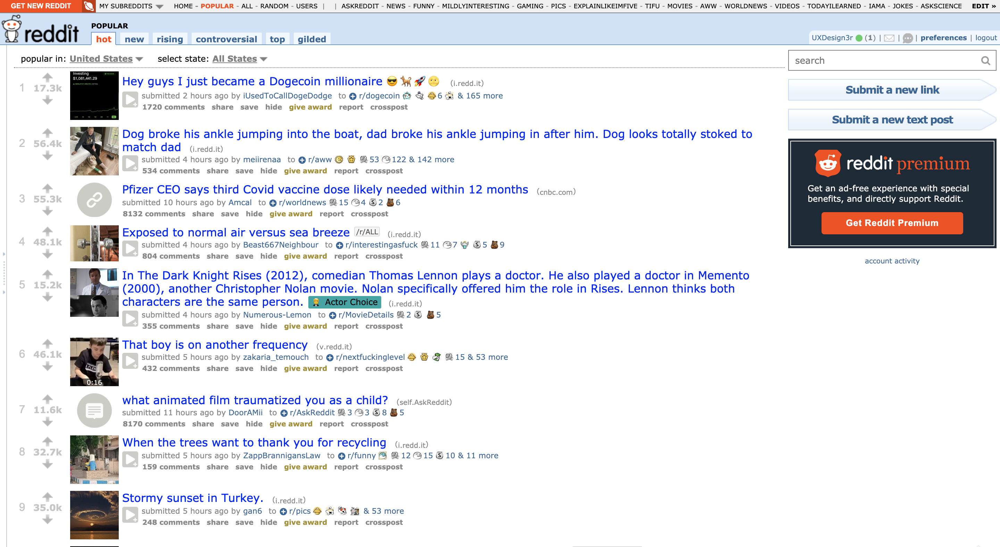
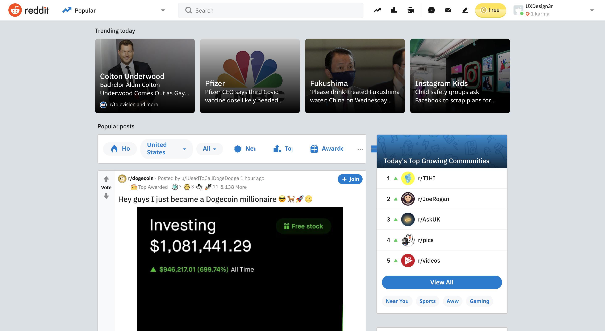
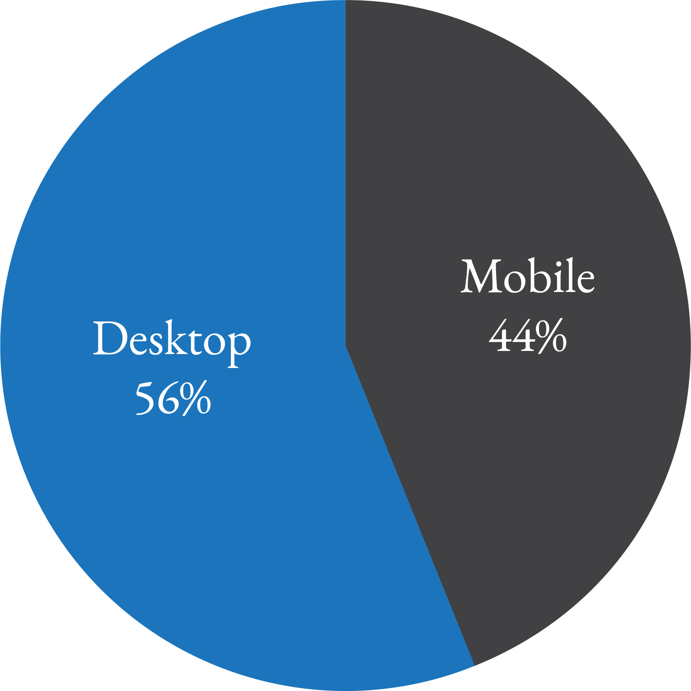
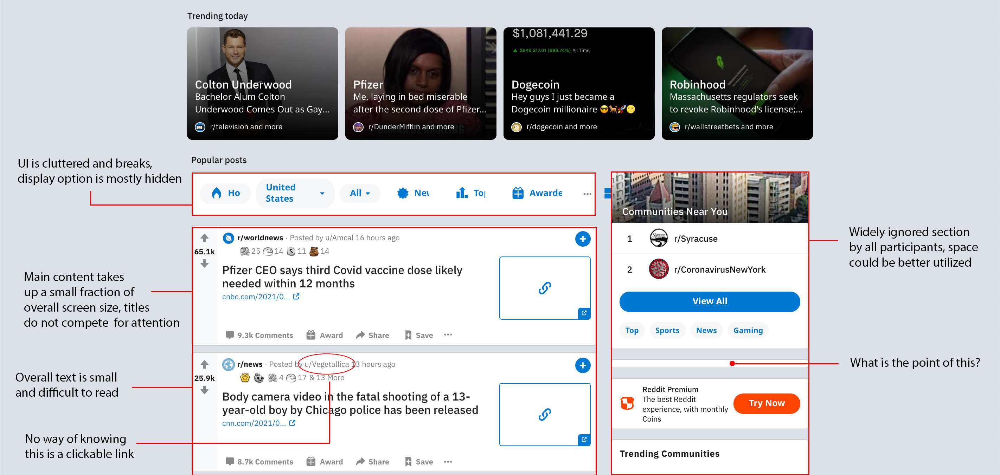
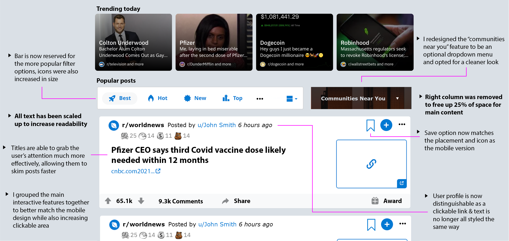
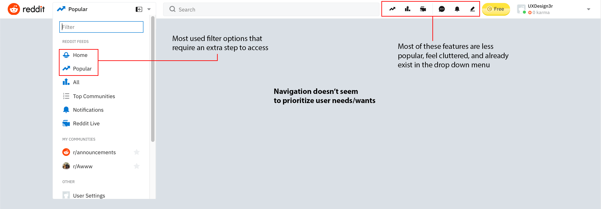
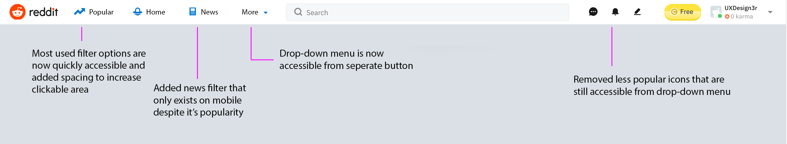
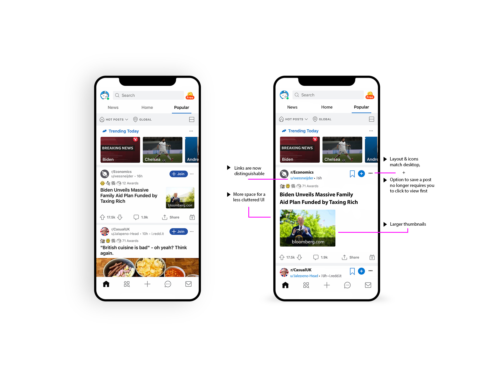
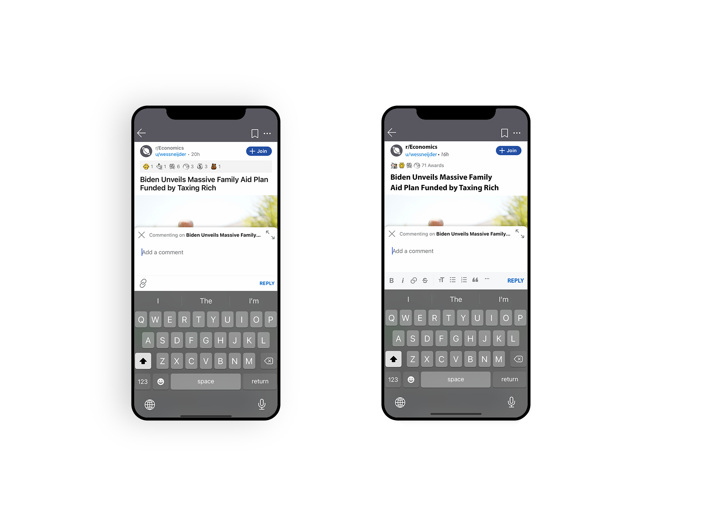

What is Reddit?
Reddit is a social news platform that allows its registered users the ability to share and rate content, participate in discussions, and as of recently, offer live streaming. Its popularity stems from its vast amount of discussion forums called “subreddits”. These subreddits ultimately cover most topics you can think of, allowing users significant freedom in customizing their news feed to their own liking. Its vast amount of information attracts a heavy amount of traffic with nearly 1.74 billion visits alone in December of 2020.
Purpose of This Redesign
As a student of Human-Computer Interaction (HCI) with a growing interest in UX/UI design, I wanted to try my hand at a simple redesign. Since COVID-19, I’ve spent a lot of my time passing the days scrolling through Reddit. It’s a platform I have come to enjoy, but it hasn’t been without its flaws. It is worth noting that Reddit has undergone a relatively recent redesign which could be described as a complete overhaul, and while the new design works wonders, I firmly believe that any design can always be improved.
Reddit Before Update
Reddit After Update
So, this is my own project to obtain a deeper understanding of the UX/UI process. It should be noted that this case study will not focus on an entire overhaul, only improvements where they may be beneficial while keeping in mind the practice of accessibility standards. I also want to stress that I am not affiliated with Reddit by any means, this is simply a way to challenge myself.
Goals for The Redesign
Main Goals
- Apply principles learned throughout my study of Human-Computer Interaction to provide an improved user experience.
- Propose various redesigns that better serve the user journey/productivity.
- Provide simple solutions for aspects that do not meet accessibility standards.
Getting to Know The Users
Demographics
According to a 2021 analysis from foundation inc., Reddit receives over 330 active users each month. Of its users based in the U.S., a majority 42% are between the ages of 18 and 24. Additionally, 15% of these users are male, while 8% are female. As far as how users access Reddit, 56% of users prefer the desktop version, while 44% prefer to use their mobile device.
With the percentages being so close, I visited both the mobile and desktop versions for this case study. This actually led me to find, which I’m sure you’ll see later, that many of the pain points found in one version of the platform had a simple solution in the other.
User Interviews
For user interviews, I relied on an audience that would closely resemble the average user demographics stated above. In total, 5 users were interviewed. Of the group, 3 were males between the ages of 22 and 25, while the other 2 were females between the ages of 21 and 22.
- User 1 (M, 25) - Frequent mobile user
- User 2 (M, 23) - Semi-frequent desktop user
- User 3 (F, 21) - Frequent desktop user
- User 4 (M, 22) - Frequent mobile user
- User 5 (F, 22) - Non-frequent mobile user
The purpose of the interviews was to gain a better understanding of user’s needs and wants from a tool such as Reddit. The questions were set up to identify their purpose for interacting with the platform and what features they use the most.
Key Insights
- Users all expressed an interest in using the platform primarily for entertainment purposes while also staying up to date with news.
- The most used features amongst participants were the ability to share posts with friends, using the rating system (liking/disliking), and the option to save posts in order to view them later.
User Testing
From here I wanted to identify pain points in Reddit’s design through usability tests. Users were given basic navigational tasks on both the mobile and desktop versions before being asked to comment on their experience. These included interacting with posts, visiting a user profile, and joining a subreddit, ontop of interacting with the platform as they might usually do.
Pain Points
Once I finished the usability testing, I was able to identify reoccurring pain points users experienced. As a reminder, I focused on both the mobile and desktop versions.
Pain Point 1 - Inconsistencies (Desktop & Mobile)
While it is expected that the desktop version and mobile version are designed differently, some inconsistencies between the two caused the user to struggle with tasks they were otherwise familiar with on one version.
“It’s hard for me to jump between the two, my eyes keep mistakenly taking me to where I assumed the button would be.”
Pain Point 2 - Overwhelming UI (Desktop)
Most participants reported feeling overwhelmed at one point while navigating the desktop version. This was be attributed to factors such as long blocks of text and multiple contrast issues. Each participant reported that text, in general, was too small and difficult to read.
“Your eyes don’t know where to look, there so many things going on. I feel like I’d get a headache trying to read this, it just feels so overpopulated.”
Pain Point 3 - Misclicks (Mobile)
By far the most reported frustration during testing was users misclicking links. For example, when tasked with visiting either the subreddit from a post or the profile of the Redditor that created it, participants required multiple attempts before being able to successfully do so. This, once again, is a result of poor sizing and spacing issues.
“How was this designed for literally anyone with thumbs?”
Pain Point 4 - Missing Features (Mobile & Desktop)
4/5 participants claimed that they felt they could only enjoy either one version of the platform or the other. This is due to some of their favorite features either only existing on mobile or desktop.
“It’s a shame, but this is why I don’t really switch between the two, I have to give up one feature for another.”
Paint Point 5 - “Mildly” Annoying Problems (Mobile & Desktop)
Some users pointed out that small problems exist that when occur often, completely ruin their experience. One participant reported that while on a mobile device and after having scrolled through their feed for some time, accidentally touching the top of their screen would send them back to the top with no option to return to where they left.
“It’s the little inconveniences, eventually they drive me up a wall.”
Affinity Mapping
I wanted to organize data in a way to better visualize the paint points users experienced and brainstorm ideas on possible solutions. I placed a lot of emphasis on creating solutions that addressed the apparent disconnect between preferability between the mobile or desktop version.

Brainstorming Using Affinity Mapping- Red for Pain Points, Blue for Possible Solutions
Sketches
Before jumping into any redesigns, I made it a point to sketch out some low-fidelity wireframes. Reddit’s popularity puts it on the same scoreboard as Facebook and Twitter, its main competitors in some aspects. Spending time analyzing how Facebook and Twitter organize their content allowed me to brainstorm ideas on how to best go about this redesign while putting it on paper.


Finally, The Redesign
1. First and Foremost, The Layout (Desktop)
Reddit's Current Desktop Design
Reddit's Desktop Layout Redesigned
Proposed Solution
Reduce filter options- While reducing clicks can provide a better user experience, it shouldn’t come at the cost of a cluttered design. Instead of providing users with a multitude of filter options, I provided them with the most commonly used ones based on feedback. In this case, less is more.
Remove side content- User-testing confirmed to me that there wasn’t any appreciation for the right side content. With most of the negative feedback revolving around Reddit’s painfully small text, removing the side content and relocating that information to the footer allowed for a significant boost in space. From here I could size up the content, including font and buttons. This also permitted me to really emphasize the headlines which should make for an easier time skimming through posts. It’s worth noting that side content was information that could be found on other parts of the site, no functionality is lost by removing it.
Familiarity- Designing for familiarity is one of my biggest priorities here. Users should be able to seamlessly switch between the desktop and mobile versions of Reddit without feeling like they are on a new platform altogether. I relocated buttons within each post to better group similar functions together and promote simplicity.
Accessibility- One accessibility concern was that users were not able to easily distinguish links from regular text. By changing the styling for post information, users should have an easier time with legibility and separating information, such as the creator of each post and how long ago it was posted. Users should also now be able to recognize the creator’s username as a clickable link.
2. Navigation Menu Revamp (Desktop)
Old Desktop Navigation
New Desktop Navigation
Proposed Solution
User-Centered Design- Reddit’s current navigation did not convince me that it prioritized user’s needs and interests. Extra steps were required for switching between the “popular” and “home” filters. These are filters that users constantly switched back and forth between when interacting with Reddit during testing. Some features even had two dedicated locations on the menu, which seemed unnecessary. This redesign instead prioritized the functionality users preferred the most.
Addressing The Missing Features- One of the biggest disconnects for mobile users switching to desktop was the missing “News” filter. 5/5 users indicated that they used Reddit to stay up to date with current events along with entertainment purposes. While this particular redesign may seem minor, adding this feature to the desktop is arguably one of the most crucial ways to allow for a more fluid experience.
Improving The Mobile Experience
Same Problem, Same Solution
Reddit’s mobile design also suffers from the use of small text and indistinguishable links. My proposed solution is to bring it up to date with the desktop redesign, once again placing an emphasis on familiarity and information users look for the most–headlines and subreddits. The bigger text also reduces the chance of misclicking the wrong element.

"Return to Last Post" Feature
Some users were quick to complain about accidentally losing their spot after spending some time scrolling through social media– “one slip of your finger and you’re forced to scroll all the way back to where you were if you even have the patience for that”. Adding an optional feature that would take a user back to the last post they viewed can translate to a much more positive user experience.
The Freedom to Format!
Desktop users are able to appreciate a wide variety of formatting options when commenting on a post (bold, italics, linking, etc.). It was surprising to learn that mobile did not carry over at least a few of those options, something users were quick to point out. Instead, users have to resort to using inline code for something as simple as bolding text, none of which knew how to do so. My proposed solution is to simply offer the same functionality on mobile that already exists on desktop.
Self-Reflection
Biggest Challenges
I found most of my difficulties during the initial research phase. Finding accurate, detailed, and up-to-date information from a credible source was not readily available for user demographics. Additionally, most of Reddit’s mobile and desktop reviews revolved around content-related issues instead of the user interface, making it hard to find how users felt about its design.
What I learned
- There are many small details to consider when creating a user-centered design. I learned not to overlook even the smallest changes, as these can greatly impact the overall experience.
- User testing also taught me how to better conduct interviews, avoiding bias, and obtaining a deeper understanding of what users want.
All in all, this challenge was a great learning experience for getting to know what this process entails. I enjoyed stepping into the various roles and responsibilities, learning more from each one. There is undoubtedly so much more for me to learn and I look forward to doing more of these in the future. Thank you for reading!